전자기기기능장 (2007-07-15 기출문제)
1과목: 임의구분
1. 그림과 같이 △결선을 Y결선으로 변환했을 때 Rc의 값은?
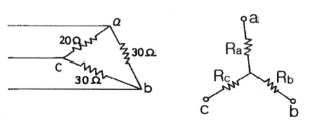
- 7.5[Ω]
- 11.2[Ω]
- 15[Ω]
- 20[Ω]
(정답률: 92%)

2. 극수가 6극인 50[Hz]용 3상 유도전동기가 있다. 슬립이 4[%]일 때, 이 전동기의 회전수는 몇 [rpm]인가?
- 940
- 960
- 980
- 1000
(정답률: 95%)
3. 다음 중 유도 전동기의 회전력은?
- 단자 전압에 정비례
- 단자 전압의 2승에 비례
- 단자 전압의 3승에 비례
- 단자 전압의 1/2승에 비례
(정답률: 85%)
4. 최대치가 A인 정현파의 전파정류의 실효치는?
- 0.5A
- 0.707A
- 1A
- 1.414A
(정답률: 81%)
5. 이미터 바이어스(bias) 회로에서 안정도에 영향을 주지 않는 것은?
- Rb(=R1//R2, 바이어스 저항)
- hfe(=β, 전류이득)
- Re(이미터 저항)
- RL(부하 저항)
(정답률: 75%)
6. 부하가 증가할 때 증폭기의 입력 저항(Ri)이 감소하는 것은?
- CB 증폭기
- CE 증폭기
- CC 증폭기
- CB와 CC 증폭기
(정답률: 79%)
7. 배타적 논리합(EX-OR)의 논리식을 올바르게 표시한 것은?
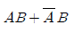
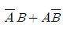
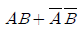
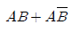
(정답률: 92%)
8. 어떤 상태 또는 명령을 2진 코드로 바꾸는 논리회로는?
- 멀티플렉서
- 디멀티플렉서
- 인코더
- 디코더
(정답률: 90%)
9. 순서 논리 회로(sequential logic circuit)의 구성을 나타낸 것은?
- 감산 회로와 논리곱 회로
- 가산 회로와 논리합 회로
- 조합 회로와 논리 소자
- 조합 회로와 기억 소자
(정답률: 77%)
10. 64[Kbyte]를 액세스하려면 최소 몇 개의 어드레스 선이 필요한가?
- 8
- 12
- 16
- 20
(정답률: 86%)
11. TV의 원격제어용 신호는 일반적으로 어느 방식을 가장 많이 사용하는가?
- 무선 조정
- 초음파 조정
- Xtjs 조정
- 적외선 조정
(정답률: 92%)
12. 레코드플레이어에서 톤 암(Tone Arm)의 부속품 가운데 암의 축에 비틀려는 힘의 작용을 막기 위한 것은?
- 암 베이스
- 암 리프터
- 래터럴 밸런스
- 인사이드 포스 캔슬러
(정답률: 95%)
13. 디지털 시스템에서 음수를 나타내는 방법이 아닌 것은?
- 부호와 절대값
- 1의 보수표시
- 2의 보수표시
- 9의 보수표시
(정답률: 87%)
14. 다음 계기 중 주파수를 측정할 수 없는 것은?
- 오실로스코프
- 주파수 카운터
- 그리드 딥 미터
- VTVM(Vacuum-Tube VoltMeter)
(정답률: 90%)
15. 자유 공간에서 반파 안테나의 방사 전력이 100[W]일 때, 최대 방사방향으로 5[km] 떨어진 지점에서의 전계강도는 약 몇 [mV/m]인가? (단, 반파 안테나의 방사저항 Rr은 73.13[Ω]이고, 방사 전계 E는 전류를 I, 거리를 d 라 할 때 E=60I/d임)
- 5
- 14
- 26
- 70
(정답률: 65%)
16. 마이크로컴퓨터에서 인터럽트를 이용하여 데이터의 입ㆍ출력을 행할 경우 데이터 하나하나에 대해 CPU가 제어하기 때문에 고속처리를 할 때는 비효율적이다. 이 문제를 해결하기 위해 CPU를 통하지 않고 입ㆍ출력 장치와 메모리 사이에서 데이터를 주고받는 방식을 무엇이라 하는가?
- CTC
- PIPO
- DMA
- NMI
(정답률: 98%)
17. 다음 블록도는 아날로그 신호를 디지털 화하여 전송하기 위한 PCM 송신 블록도이다. □안에 알맞은 회로 기능을 순서대로 나열한 것은?
- ① 파형정형, ② 양자화, ③ 표본화
- ① 표본화, ② 양자화, ③ 부호화
- .① 표본화, ② 양자화, ③ 파형정형
- ① 파형정형, ② 표본화, ③ 복호화
(정답률: 95%)
18. 다음 그림과 같은 유도결합 회로를 T형 등가 회로로 바꾸면 어느 회로로 되는가?
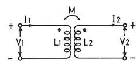
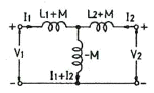
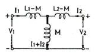
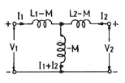
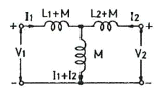
(정답률: 88%)
19. 전기력선의 성질을 나타낸 것 중 옳지 않은 것은?
- 전기력선은 등전위면과 직교한다.
- 두 전기력선은 서로 교차하지 않는다.
- 전기력선은 부(-) 전하에서 나와 정(+) 전하로 들어간다.
- 한 점에서의 전기력선의 밀도는 그 점에서의 전계의 세기를 나타낸다.
(정답률: 83%)
20. 전원회로에서 무부하시 출력단자 전압이 100[V]이고, 부하를 연결했을 때의 출력단자 전압이 80[V]이었다. 저압변동률은 몇 [%]인가?
- 15
- 20
- 25
- 30
(정답률: 84%)
2과목: 임의구분
21. JFET에서 IDSS=4[mA], VP=-2.5[V], VGS=-0.5[V]인 경우 드레인 전류 ID는 약 [mA]인가?
- 1.5
- 2.6
- 5
- 7
(정답률: 83%)
22. 연산증폭기의 성능을 평가하는 주요항목으로 차동이득과 동상이득의 비를 나타내는 것은?
- 슬루율(slew rate)
- 전원전압제거비(PSRR)
- 동상신호제거비(CMRR)
- 오프셋 전압(offset voltage)
(정답률: 94%)
23. 10진수 79를 3-초과 코드(excess-3 code)로 변환시키면?
- 1010 1100
- 1010 1001
- 0111 1011
- 0111 1100
(정답률: 57%)
24. 다음은 D-FF을 나타낸 것이다. □에 들어갈 적당한 gate는?
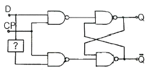
- NOT gate
- OR gate
- AND gate
- NOR gate
(정답률: 78%)
25. 슈퍼헤테로다인 수신기에 고주파 증폭 회로를 부가하면?
- 감도가 나빠진다.
- 선택도가 좋아진다.
- 영상신호 방해가 증가한다.
- 신호대 잡음비가 낮아진다.
(정답률: 86%)
26. 데이트 속도의 변동에 의해서 생기는 재생신호 주파수의 동요를 무엇이라고 하는가?
- 와우 플러터
- 험
- 모터 보링
- 잡음
(정답률: 91%)
27. 테이프 리코더에서 평탄한 주파수 특성을 얻기 위해 녹음시 EQ 회로에서 보상하는 주파수는?
- 저역 주파수
- 고역 주파수
- 중역 주파수
- 저역 및 중역 주파수
(정답률: 76%)
28. 전류와 자장의 세기와의 관계를 나타내는 법칙은?
- 옴(Ohm)의 법칙
- 렌쯔(Lenz)의 법칙
- 키르히호프(Kirchhoff)의 법칙
- 비오-사바르(Biot-Savart)의 법칙
(정답률: 85%)
29. 바랙터(varactor) 다이오드에 대한 설명으로 옳은 것은?
- 가변 저항 역할을 한다.
- 가변 용량 역할을 한다.
- 가변 인덕턴스 역할을 한다.
- 가변 컨덕턴스 역할을 한다.
(정답률: 85%)
30. 다음 중 초음파 탐상이 주로 많이 사용되는 것은?
- 고도 측정
- 어군 탐지
- 비파괴 검사
- 방향 탐지
(정답률: 86%)
31. 녹음기에서 테이프를 일정한 속도로 움직이게 하는 것은?
- 캡스턴과 핀치롤러
- 핀치롤러와 텐션암
- 캡스턴과 테이프가이드
- 테이프가이드와 테이프패드
(정답률: 94%)
32. 다음 중 온도 변화에 따라 저항값이 변화하는 반도체 성질을 이용한 감온 소자는?
- SCR
- UJT
- 서미스터(Thermistor)
- 터널 다이오드(Tunnel Diode)
(정답률: 93%)
33. 역률이 0.001인 콘덴서의 Q의 값은?
- 1
- 10
- 100
- 1000
(정답률: 85%)
34. 다음은 SSB 변조기의 기본 구성이다. □ 안에 알맞은 것은?
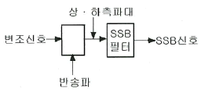
- 고주파 증폭기
- 저역필터
- 평형 변조기
- 혼합기
(정답률: 79%)
35. 전송하고자 하는 신호를 연속된 신호로 전송하는 것이 아니라 일정한 시간 간격으로 순간순간 신호의 진폭을 표본화하여 펄스 형태로 만든 다음에 전송하는 방식은?
- FM 통신방식
- AM 통신방식
- 펄스 통신방식
- 다중 통신방식
(정답률: 88%)
36. 수정발진기의 주파수 변동 원인과 방지책의 설명으로 옳지 않은 것은?
- 온도변화 - 항온조 사용
- 부하의 변동 - 발진부의 후단에 완충증폭기 사용
- 전원전압 변화 - 발진회로의 전원은 전체 회로의 전원과 공통으로 사용
- 동조점의 불안정 - 발진부의 양극 조절은 동조점보다 약간 벗어난 곳에 조정
(정답률: 81%)
37. AM 수신기의 전체적인 특성을 판정하는 일반적인 종합 항목이 아닌 것은?
- 감도
- 정밀도
- 선택도
- 충실도
(정답률: 50%)
38. 정류 회로의 직류 전압이 300[V]이고, 리플 전압이 3[V]이었다. 이 회로의 리플 함유율은?
- 1[%]
- 2[%]
- 3[%]
- 10[%]
(정답률: 81%)
39. 크리스털 픽업(Pick Up)은 어떤 효과를 이용한 것인가?
- 홀 효과
- 광전 효과
- 압전기 효과
- 정전기 효과
(정답률: 89%)
40. 음(소리)의 3요소 가운데 그 중 하나를 설명한 것은?
- 소리의 반사에 의한 간접 음이 잔향이다.
- 높은 주파수의 소리일수록 흡수되는 성질이 강하다.
- 낮은 주파수의 소리일수록 반사하는 성질이 강하다.
- 소리의 높이는 기본 주파수 또는 파장에 의하여 정하여진다.
(정답률: 83%)
3과목: 임의구분
41. 교류전력제어에 사용되는 양방향 사이리스터(thyrister)는?
- SCR
- JFET
- MOSFET
- TRIAC
(정답률: 88%)
42. 컴퓨터 시스템에서 데이터의 입ㆍ출력을 관리하고, CPU의 명령 수행에 필요한 신호를 내보내는 장치는?
- DMA
- 제어장치
- 레지스터
- 프로그램 카운터
(정답률: 82%)
43. 다음 중 반도체 레이저 재료로 주로 사용되는 대표적인 것은?
- Ge
- Si
- CO2
- GaAs
(정답률: 87%)
44. 인터럽트 발생시 가장 높은 순위의 인터럽트 원인부터 차례로 검사해서 찾아낸 후 이에 해당하는 서비스 루틴을 수행하는 인터럽트 방식에 해당하는 것은?
- 논 마스트 인터럽트
- 폴링
- 벡터링
- 데이지 체인
(정답률: 56%)
45. 스피커의 감도 측정에 있어서 표준 마이크로 폰이 받는 음압이 10[μ bar]이면 이 스피커의 전력 감도는 약 몇 [dB] 인가? (단, 스피커의 입력에는 1[W]를 가한 것으로 한다.)
- 9
- 15
- 20
- 23
(정답률: 63%)
46. 강력한 초음파를 액체 속에 방사했을 때 일어나는 현상은?
- 전기왜형
- 압전효과
- 자기왜형
- 캐비테이션
(정답률: 92%)
47. 고주파 가열에서 유전 가열은 어떤 원리에 의하여 발열시키는 방식인가?
- 유전체 손
- 와류 전류 손
- 히스테리시스 손
- 표피 작용에 의한 손실
(정답률: 72%)
48. 다음 중 LIFO(Last-in, First-out) 구조는?
- ROM
- Queue
- ALU
- Stack
(정답률: 93%)
49. 다음 중 sinwt 의 라플라스 변환은?
- 1/S
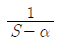
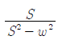
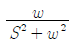
(정답률: 68%)
50. 16진 비동기 카운터를 만들려면 JK 플립플롭이 최소 몇 개가 필요한가?
- 2
- 3
- 4
- 6
(정답률: 90%)
51. 다음 중 마이크로프로세서의 구성 요소가 아닌 것은?
- 연산부
- 레지스터부
- 제어부
- 입ㆍ출력부
(정답률: 84%)
52. 다음 중 시미트 트리거(schmitt trigger) 회로의 출력 파형은?
- 구형파
- 톱니파
- 정현파
- 삼각파
(정답률: 69%)
53. 전파 정류회로의 직류(DC) 출력 전력은 반파 정류회로에 비하여 몇 배가 되는가?
- 2배
- 4배
- 8배
- 16배
(정답률: 72%)
54. 4개의 자극을 갖는 발전기가 초당 100회의 회전수를 갖는다면, 출력전압의 주파수는 몇 [Hz]인가?
- 100
- 200
- 400
- 800
(정답률: 58%)
55. 다음 중 절차계획에서 다루어지는 주요한 내용으로 가장 관계가 먼 것은?
- 각 작업의 소요시간
- 각 작업의 실시 순서
- 각 작업의 필요한 기계와 공구
- 각 작업의 부하와 능력의 조정
(정답률: 68%)
56. 그림과 같은 계획공정도(Network)에서 주공정으로 옳은 것은? (단, 화살표 밑의 숫자는 활동시간[단위:주]을 나타낸다.)
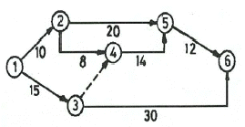
- ①-②-⑤-⑥
- ①-②-④-⑤-⑥
- ①-③-④-⑤-⑥
- ①-③-⑥
(정답률: 83%)
57. 작업자가 장소를 이동하면서 작업을 수행하는 경우에 그 과정을 가공, 검사, 운반, 저장 등의 기 호를 사용하여 분석하는 것을 무엇이라 하는가?
- 작업자 연합작업분석
- 작업자 동작분석
- 작업자 미세분석
- 작업자 공정분석
(정답률: 69%)
58. u 관리도의 관리상한선과 관리하한선을 구하는 식으로 옳은 것은?
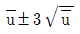
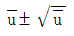
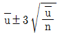
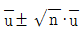
(정답률: 72%)
59. 모집단을 몇 개의 층으로 나누고 각 층으로부터 각각 랜덤하게 시료를 뽑는 샘플링 방법은?
- 층별 샘플링
- 2단계 샘플링
- 계통 샘플링
- 단순 샘플링
(정답률: 92%)
60. 다음 중 관리의 사이클을 가장 올바르게 표시한 것은? {단, A: 조처, C: 검토, D: 실행, P: 계획}
- P→C→A→D
- P→A→C→D
- A→D→C→P
- P→D→C→A
(정답률: 86%)
Rc = R1 // (R2 + R3)
= 5 // (10 + 15)
= 5 // 25
= 1/((1/5) + (1/25))
= 1/(0.2 + 0.04)
= 1/0.24
= 4.1667[Ω]
따라서, Y-결선으로 변환한 후에도 전체 저항값은 동일하므로, Rc의 값은 4.1667[Ω]입니다. 그러나 보기에서는 7.5[Ω]가 정답으로 주어졌으므로, 이는 근사값으로 반올림한 결과일 것입니다. 따라서, 정답은 "7.5[Ω]"입니다.